Выберите способ подключения
Рекомендуем подписку: добавьте её один раз и обновляйте настройки в приложении при замене сервера. Для добавления одного подключения используйте раздел «Прямое подключение» ниже.
Основной способ
Подписка
Постоянная ссылка для загрузки настроек VPN.
Показать ссылку подписки
Инструкция для подключения подписки
Выберите своё устройство и следуйте инструкции.
iPhone / iPad · V2RC
- Установите V2RC из App Store или откройте уже установленное приложение.
- В кабинете нажмите «Копировать ссылку подписки», затем перейдите в V2RC.
- На главном экране V2RC нажмите верхнюю строку с глобусом «Please import a config first». Если подключение уже добавлено, в этой строке будет его название.
Показать скриншот
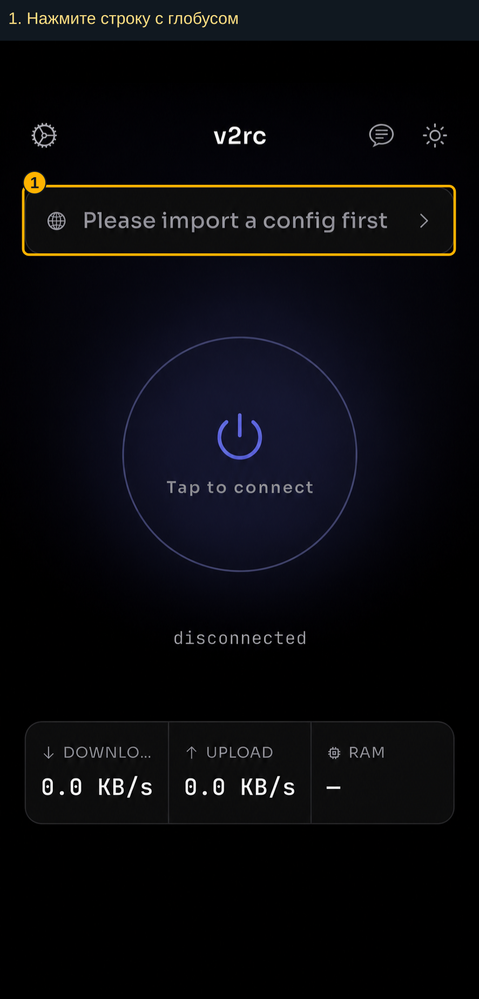
- На экране Config List нажмите Import Config («Импортировать»). Если список уже заполнен, нажмите + справа сверху.
Показать скриншот
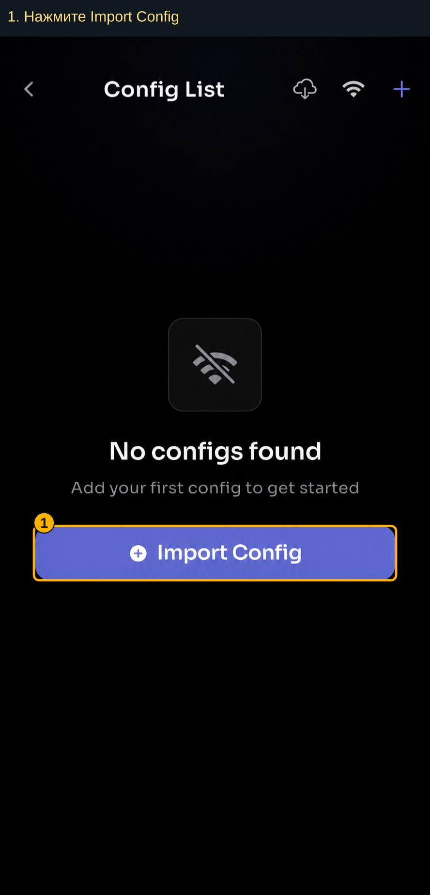
- На экране Import Config выберите Subscription. В поле Subscription Name введите название, например ArcPass. В поле Subscription URL вставьте скопированную ссылку подписки. Нажмите внизу Import Subscription и дождитесь загрузки списка подключений.
Показать скриншот
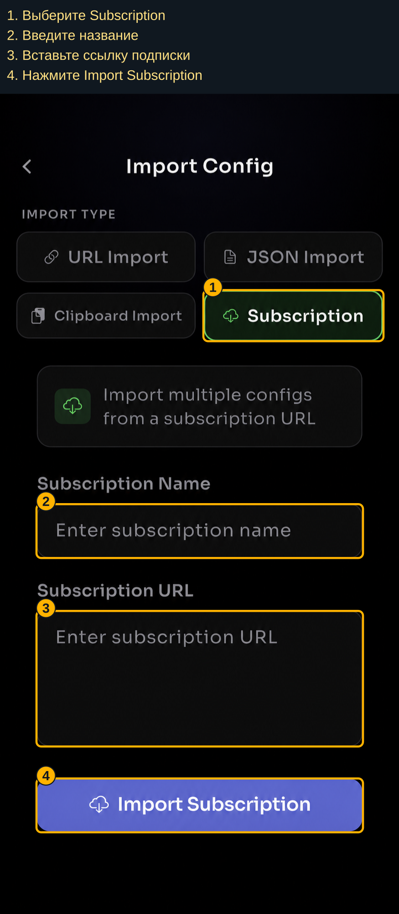
- В списке Config List выберите подключение Connection.
Показать скриншот

- Вернитесь на главный экран стрелкой ‹ слева сверху, если он не открылся автоматически. Проверьте, что в верхней строке выбрано Connection. Нажмите большую круглую кнопку Tap to connect. При первом запуске разрешите iOS добавить конфигурацию VPN.
Показать скриншот
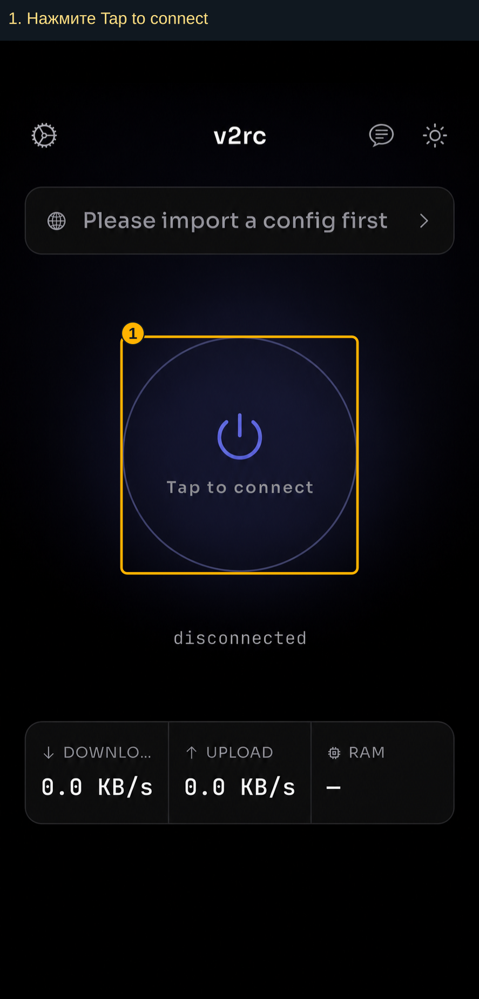
- Дождитесь надписи Internet OK и откройте любой сайт для проверки.
Показать скриншот
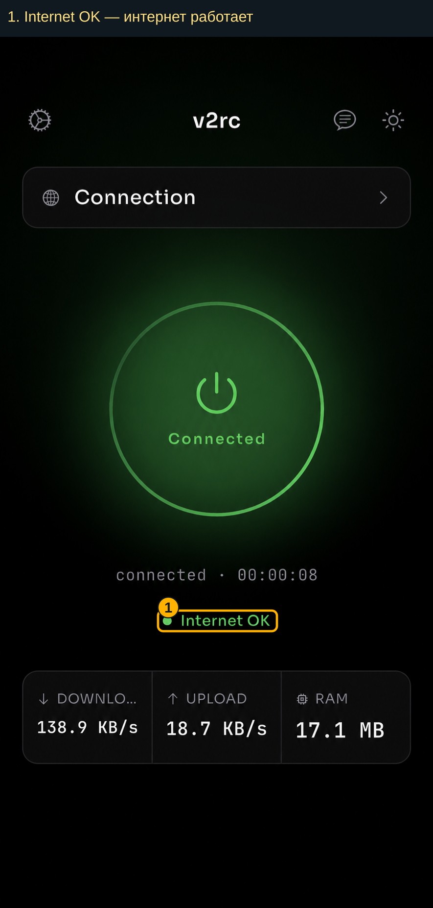
Android · v2rayNG
Инструкция для v2rayNG 2.3.15. В других версиях названия и расположение кнопок могут отличаться.
- Скачать v2rayNG для Android (APK). Откройте скачанный APK и установите приложение. Если v2rayNG уже установлен, просто откройте его.
- В кабинете нажмите «Копировать ссылку подписки». Перейдите в v2rayNG.
- Нажмите ☰ слева сверху → «Группы», затем + справа сверху.
Показать скриншот: Открыть меню
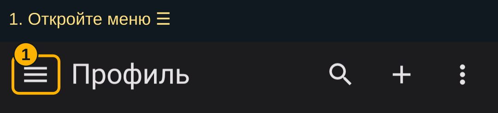
Показать скриншот: Перейти в группы
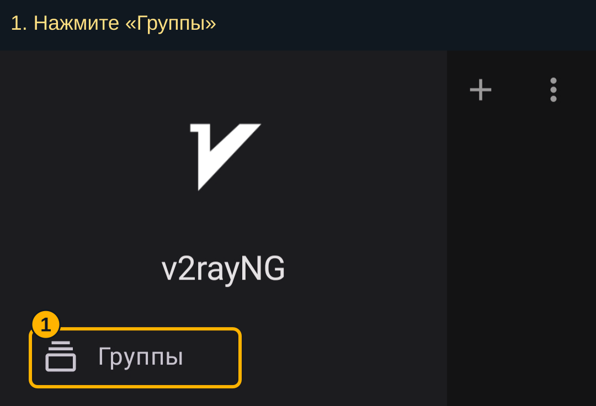
Показать скриншот: Добавить группу
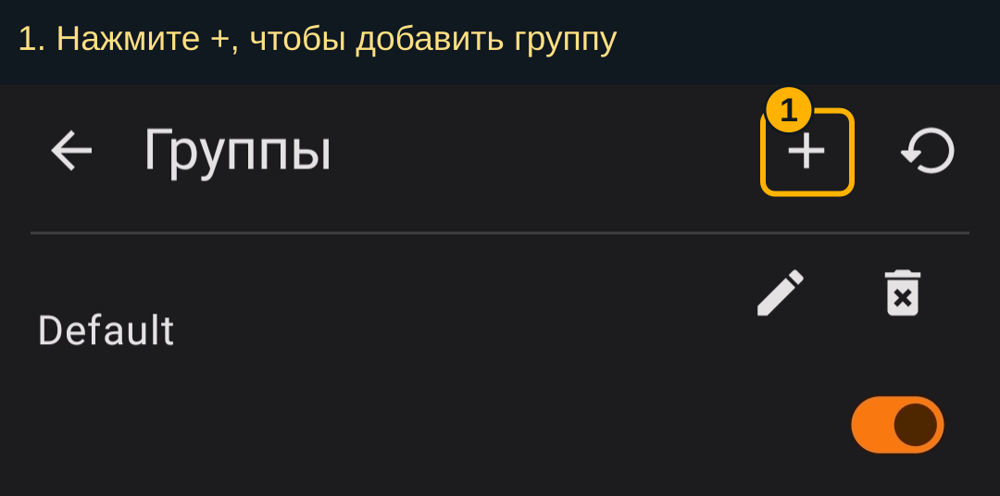
- В поле «Название» введите ArcPass. В поле «URL (необязательно)» вставьте скопированную ссылку подписки — для нашего способа это поле нужно заполнить.
Показать скриншот: Заполнить название и URL
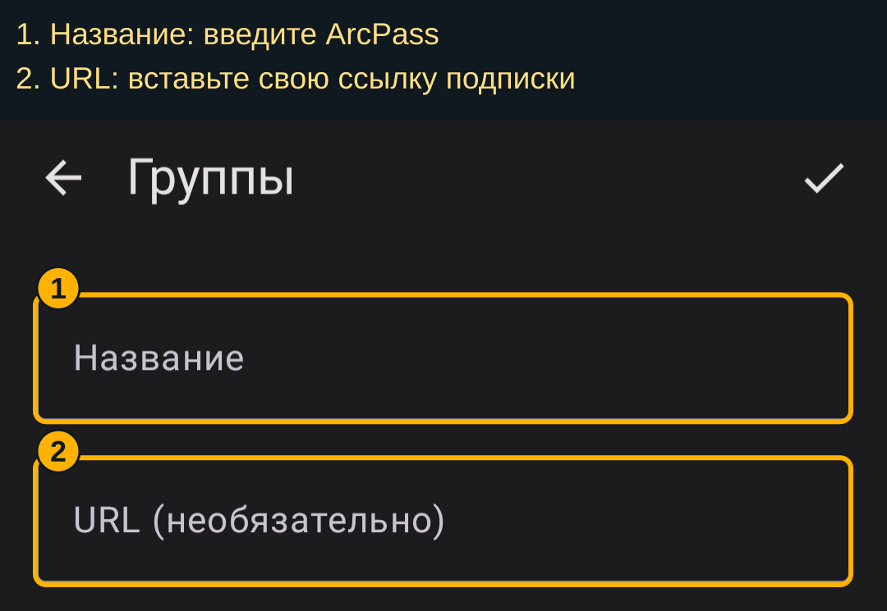
- В этой же группе включите «Использовать обновление» и «Использовать автообновление». В поле «Интервал автообновления» укажите 60 минут. Нажмите галочку ✓ справа сверху для сохранения.
Показать скриншот: Настроить обновление и сохранить
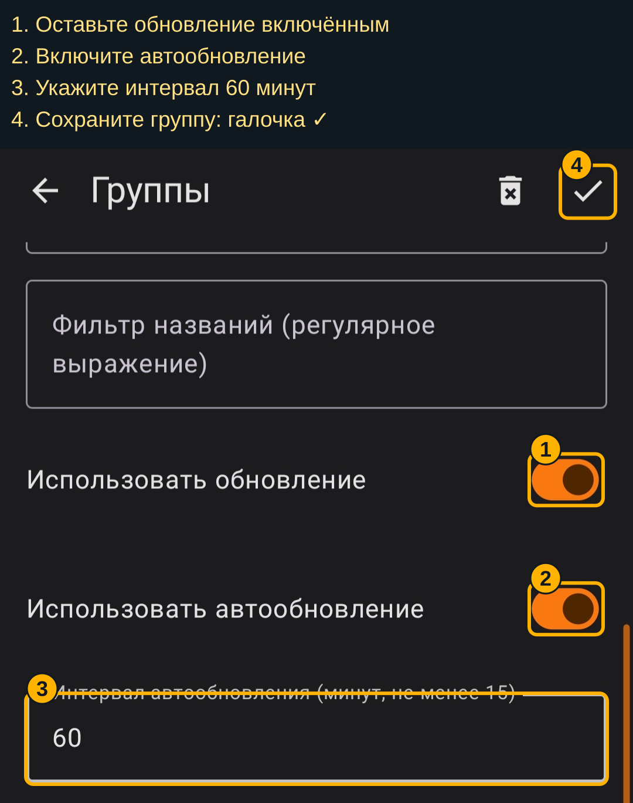
- Вернитесь на главный экран и выберите вкладку ArcPass. Нажмите ⋮ справа сверху → «Обновить подписку». Если открылось окно с дополнительными действиями, оставьте включённым только обновление подписки и нажмите «ОК». Дождитесь появления подключений.
Показать скриншот: Выбрать группу
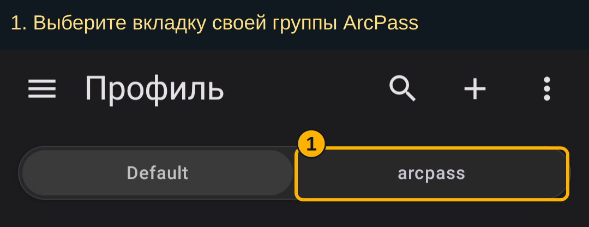
Показать скриншот: Обновить подписку
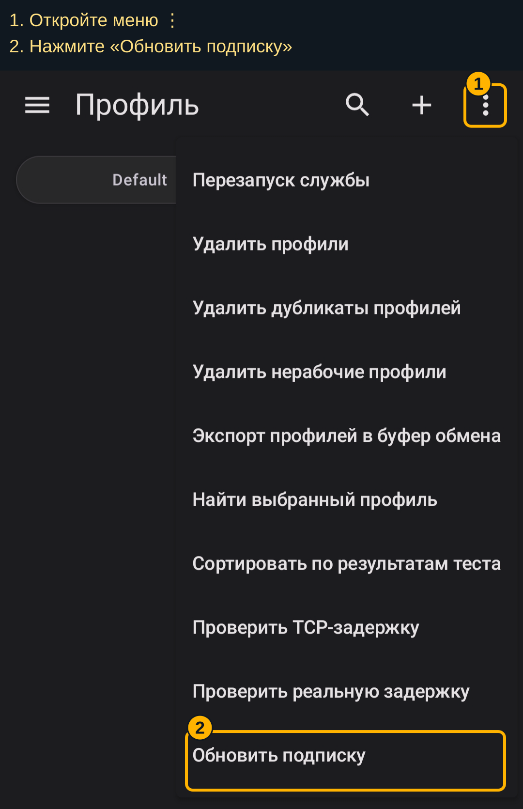
- Нажмите профиль Connection, затем кнопку запуска ▶ внизу справа. Подтвердите системный запрос Android на создание VPN-подключения, если он появится.
Показать скриншот: Выбрать Connection
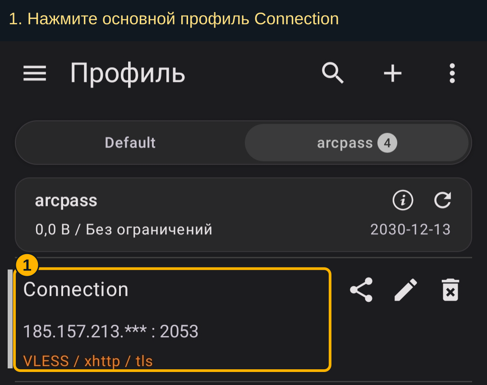
Показать скриншот: Запустить VPN
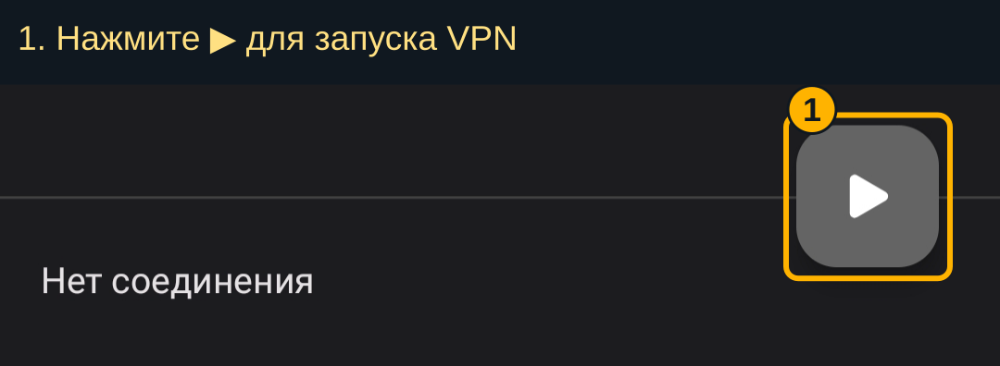
- Откройте сайт в браузере. В v2rayNG также можно нажать строку состояния внизу экрана для проверки текущего соединения.
Показать скриншот: Проверить соединение
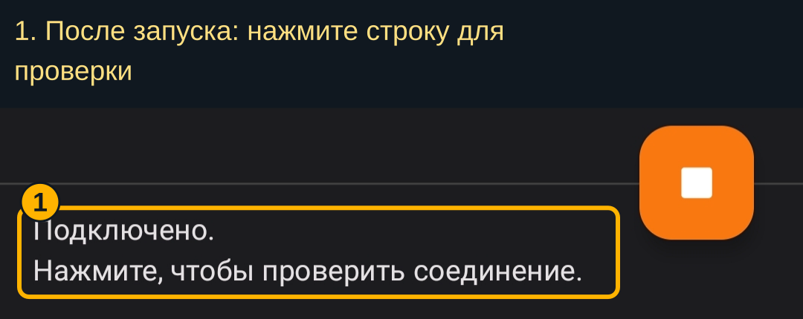
- Автообновление в Android может задерживаться из-за фоновых ограничений. Если после замены сервера подключение не работает, вручную повторите ⋮ → «Обновить подписку» и подключитесь снова.
Windows · v2rayN
- Скачать v2rayN для Windows x64 (ZIP), распакуйте архив и запустите приложение от имени администратора. Если v2rayN уже установлен, откройте его от имени администратора.
- В кабинете нажмите «Копировать ссылку подписки». Перейдите в v2rayN.
- В верхнем меню нажмите Subscription Group.
Показать скриншот
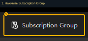
- Выберите Subscription group settings («Настройки групп подписок»).
Показать скриншот
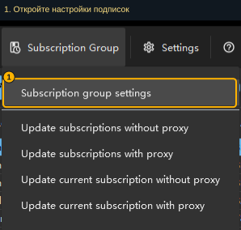
- В открывшемся окне нажмите + Add («Добавить»).
Показать скриншот
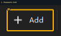
- В поле Remarks введите название группы, например arcpass. В поле URL (optional) вставьте скопированную ссылку подписки. Оставьте Enable update включённым, а в Automatic update interval (minutes) задайте 60. Остальные поля менять не нужно. Нажмите Confirm и закройте окно настроек групп.
Показать скриншот
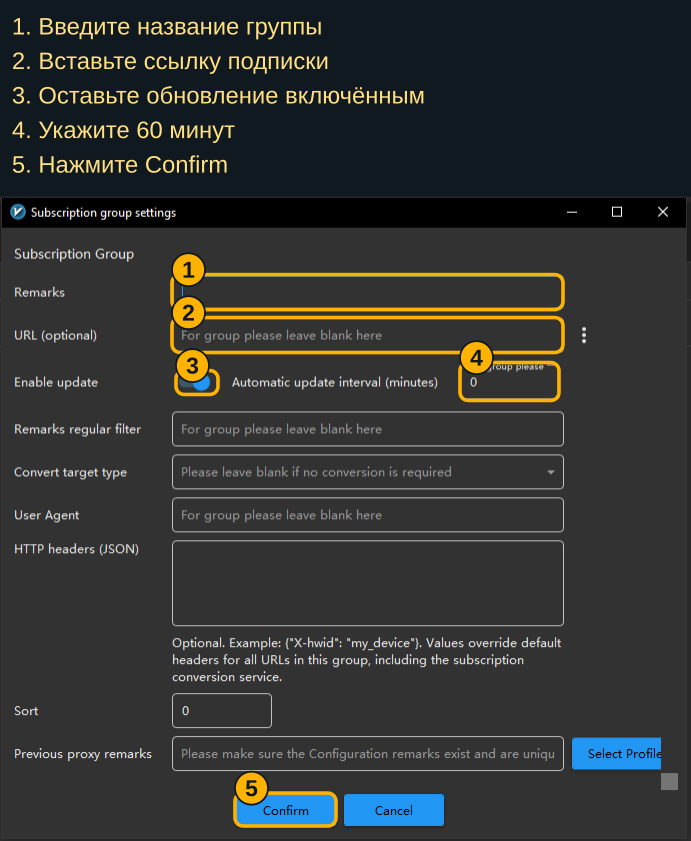
- В главном окне выберите вкладку созданной группы — в примере arcpass рядом с All.
Показать скриншот
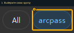
- Снова откройте Subscription Group и нажмите Update subscriptions without proxy. Дождитесь появления подключений в списке.
Показать скриншот
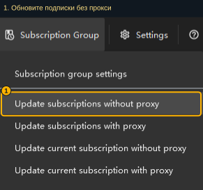
- Выберите подключение Connection и сделайте его активным: нажмите Enter или дважды щёлкните по строке.
Показать скриншот
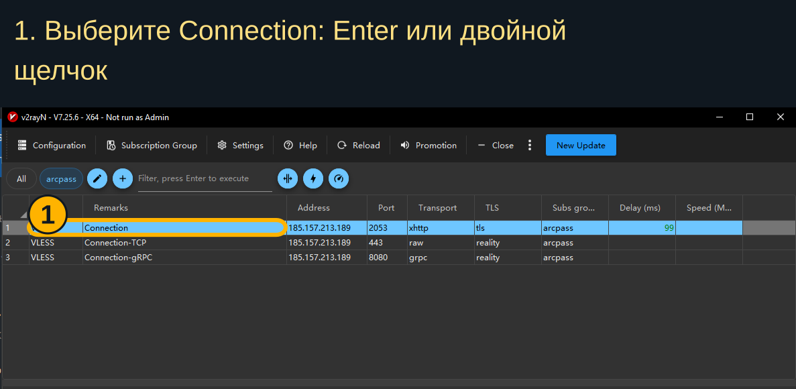
- Внизу окна в меню Routing выберите вариант с (Global). Включите переключатель Enable Tun. Если потребуется, подтвердите запрос Windows; приложение должно быть запущено от имени администратора.
Показать скриншот
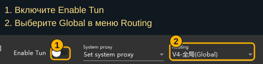
- Откройте сайт в браузере и проверьте доступ к интернету. После замены сервера обновляйте эту же подписку через Subscription Group → Update subscriptions without proxy. Повторно добавлять URL не нужно.
Прямое подключение
Дополнительный вариант
Ссылка на одно подключение. Используйте её, если вам удобнее добавлять подключение вручную или приложение не поддерживает подписки.
При замене сервера нужно заново скопировать прямую ссылку из кабинета и импортировать её в приложение.
Показать ссылку подключения
Инструкция для прямого подключения
Выберите своё устройство и следуйте инструкции.
iPhone / iPad · V2RC
- Установите V2RC из App Store или откройте уже установленное приложение.
- Нажмите «Копировать ссылку подключения». Откройте V2RC.
- На главном экране нажмите верхнюю строку с глобусом Please import a config first (или название уже выбранного подключения).
- На экране Config List нажмите Import Config. Если подключения уже есть, нажмите + справа сверху.
- Выберите URL Import. В поле Config Name введите название, например arcpass. В поле Config URL вставьте скопированную прямую ссылку. Нажмите Add Config. Для этого способа не выбирайте Subscription.
Показать скриншот

- В списке Config List нажмите добавленное подключение с указанным вами названием — в примере arcpass.
Показать скриншот
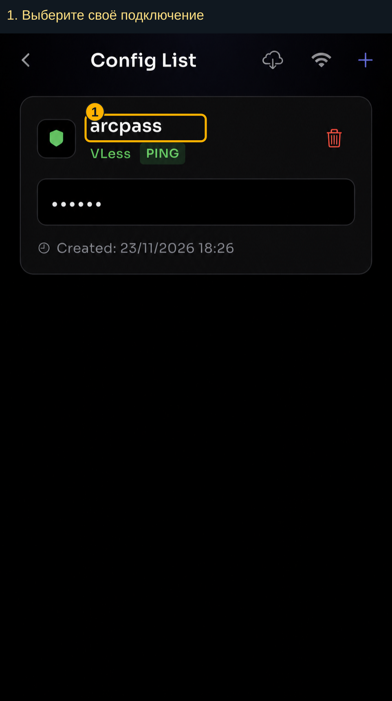
- Вернитесь на главный экран стрелкой ‹, если он не открылся автоматически. Нажмите большую круглую кнопку Tap to connect. При первом запуске разрешите iOS добавить конфигурацию VPN.
Показать скриншот
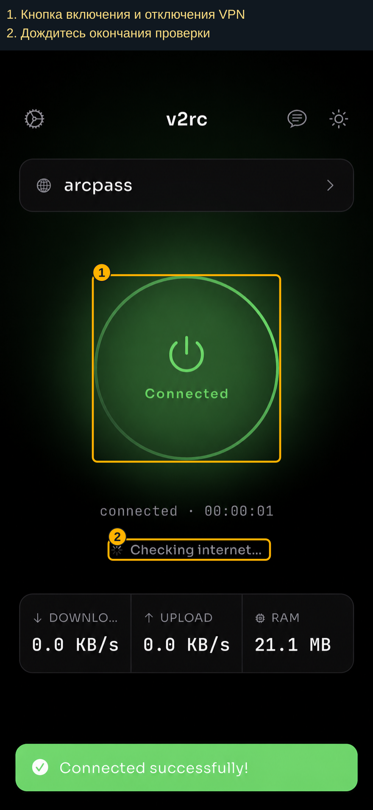
- Дождитесь надписи Internet OK и откройте любой сайт для проверки.
Android · v2rayNG
Инструкция для v2rayNG 2.3.15. В других версиях названия и расположение кнопок могут отличаться.
- Скачать v2rayNG для Android (APK). Откройте скачанный APK и установите приложение. Если v2rayNG уже установлен, просто откройте его.
- Нажмите «Копировать ссылку подключения». Перейдите в v2rayNG.
- Нажмите + справа сверху → «Импорт из буфера обмена» (Import from Clipboard).
Показать скриншот: Открыть импорт
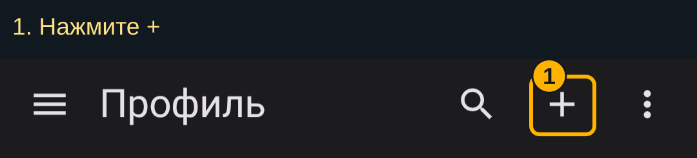
Показать скриншот: Импортировать из буфера обмена
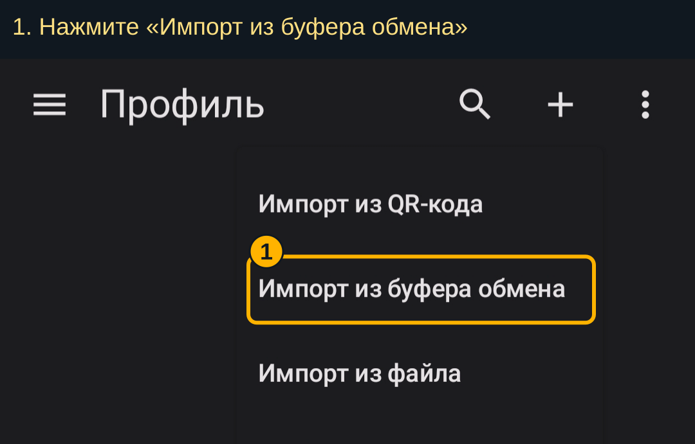
- Откройте вкладку Default (или «Все», если она отображается) и нажмите добавленный профиль Connection.
Показать скриншот: Найти импортированный профиль
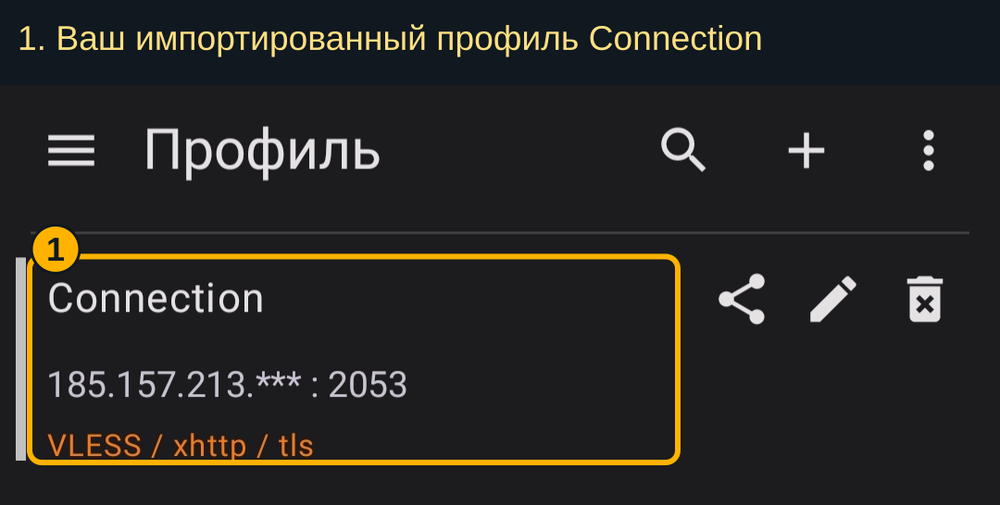
- Нажмите кнопку запуска ▶ внизу справа и подтвердите системный запрос Android на создание VPN-подключения. Откройте сайт в браузере, чтобы проверить интернет.
- После замены сервера заново скопируйте прямую ссылку из кабинета и импортируйте её тем же способом. Прямая ссылка сама не обновляется.
Windows · v2rayN
- Скачать v2rayN для Windows x64 (ZIP), распакуйте архив и запустите приложение от имени администратора. Если v2rayN уже установлен, откройте его от имени администратора.
- Нажмите «Копировать ссылку подключения». Вернитесь в v2rayN.
- В верхнем меню нажмите Configuration → Import Share Links from clipboard («Импортировать ссылки из буфера обмена»). Вместо меню можно нажать Ctrl+V в главном окне v2rayN.
Показать скриншот

- Выберите вкладку All, чтобы увидеть добавленное подключение. Найдите новую строку Connection и сделайте её активной: нажмите Enter или дважды щёлкните по строке. При импорте прямой ссылки добавляется одно подключение; на скриншоте показан общий вид списка.
- Внизу окна в меню Routing выберите вариант с (Global). Включите переключатель Enable Tun. Подтвердите запрос Windows, если он появится. Приложение должно быть запущено от имени администратора.
- Откройте сайт в браузере и проверьте доступ к интернету. После замены сервера заново скопируйте прямую ссылку из кабинета и импортируйте её этим же способом. Старая прямая ссылка сама не обновляется.